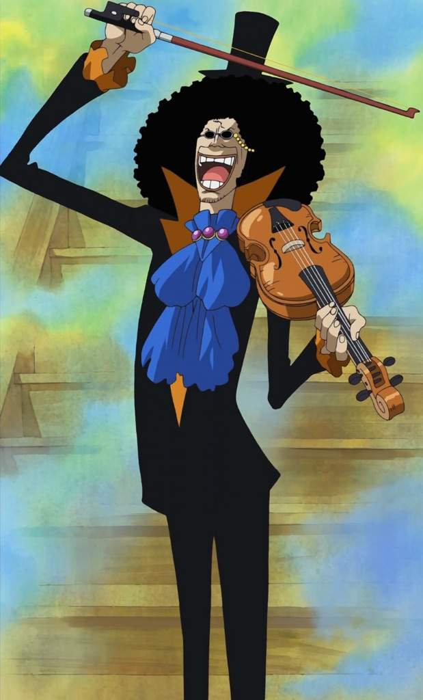
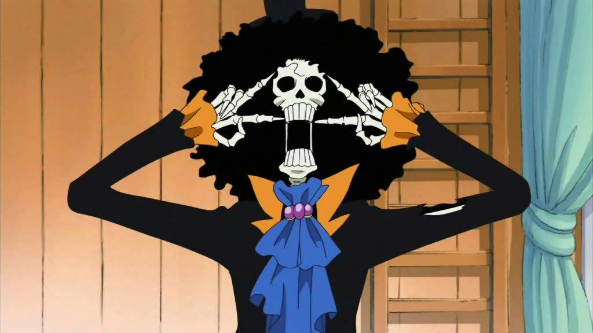
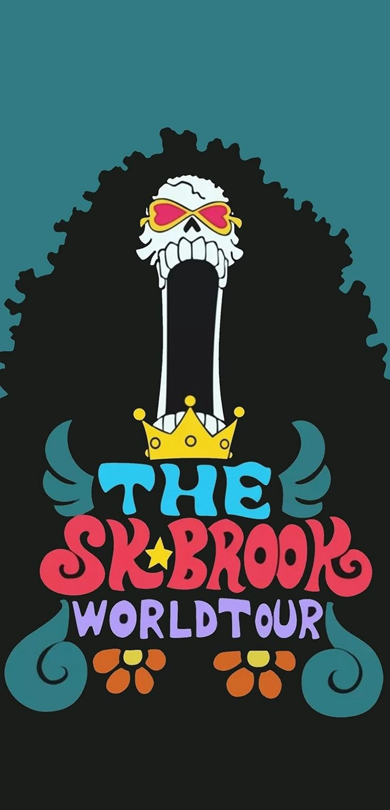

Etapas de Brook en One Piecce
🔹 Fase 1 — Orígenes / “Antes de todo” (Pirata Rumbar + tragedia)

- Brook empezó como miembro —y luego capitán— de la tripulación Rumbar Pirates.
- Junto a ellos conoció a la ballena bebé Laboon; prometerle volver a reunirse con ella luego de dar la vuelta al mundo marcó su sueño y vínculo emocional.
- Pero los Rumbar Pirates fueron emboscados y masacrados; Brook murió. Gracias a su fruta del diablo (Yomi Yomi no Mi) regresó a la vida — su alma volvió, pero su cuerpo ya se había descompuesto, dejándolo como un esqueleto con su afro intacto.
- Tras la tragedia, pasó décadas solo, vagando, con la promesa hacia Laboon como su único sostén emocional.
🔹 Fase 2 — Encuentro con la tripulación y “rescate” / unión a los Sombrero de Paja

- Eventualmente, en el arco Thriller Bark Arc, el grupo de Straw Hat Pirates encuentra a Brook en un barco fantasma dentro del misterioso Florian Triangle.
- Brook —tras recuperar su sombra robada por Gecko Moria— acepta la invitación de unirse a ellos. Su rol pasa a ser músico + espadachín del grupo.
- Su deseo: cumplir la promesa a Laboon — viajar con los Straw Hat por la Grand Line, y algún día reunirse con su vieja amiga ballena.
🔹 Fase 3 — Vida como Straw Hat: crecimiento, habilidad, responsabilidad

- Como miembro oficial de los Straw Hats, Brook combina su rol de músico con combates: usa su espada-cane, su agilidad (por ser esqueleto), y también sus habilidades especiales derivadas de la fruta del diablo: su alma, sus técnicas, su música.
- Brook tiene un estilo único: música, humor, valores, pero también símbolo de resiliencia — sobrevivió décadas solo, y aún así mantiene esperanza. Eso lo hace especial dentro de la tripulación.
- Su presencia aporta alivio, consuelo, arte y corazón al grupo — una mezcla de tragedia, humor, idealismo y valentía.
🔹 Fase 4 — Éxito, “Soul King”, fama mundial + compromiso con sueños + lealtad renovada

- Durante la elipse de 2 años en la historia (timeskip), Brook obtiene fama mundial como músico bajo el alias Soul King — viaja, actúa, se convierte en estrella.
- Aun con fama, mantiene su promesa — su objetivo sigue siendo reunirse con Laboon y volver con su tripulación. Su lealtad no cambia.
- Dentro del grupo, su valor crece: no solo como músico, también como espadachín, luchador, aliado confiable. Su poder, combinando alma, humor, espada y música, lo convierte en un miembro completo.